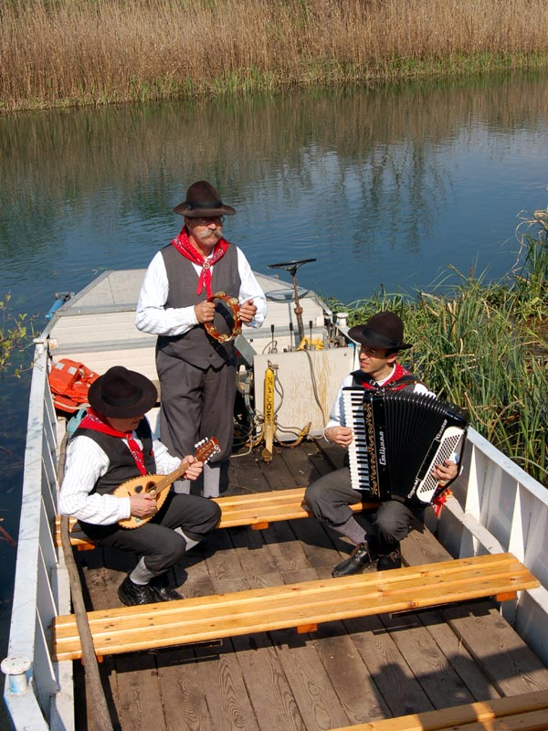
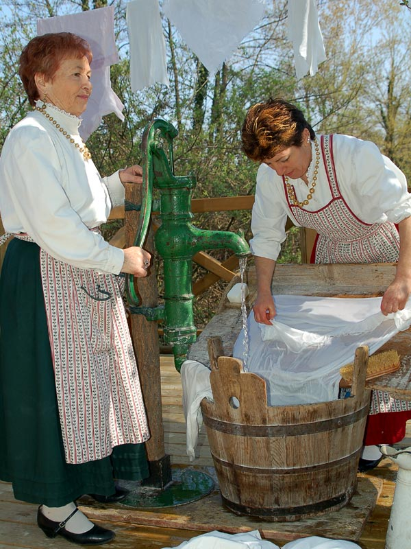
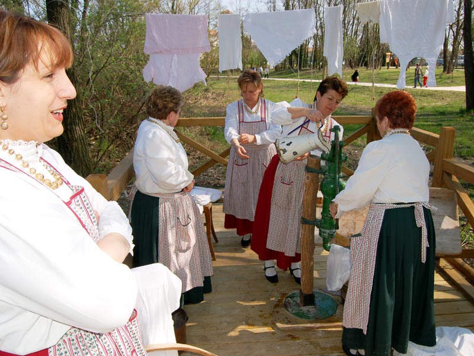

Gli antichi mestieri lungo il Sile
Il Sile, il più lungo fiume di risorgive d'Europa, presenta ambienti umidi di grande interesse, accanto a testimonianze di vita e del secolare lavoro dell'uomo,
in simbiosi con il fiume stesso i principali beneficiari della forza creatrice del fiume sono stati agricoltori, cacciatori e pescatori.
Col lento trascorrere dei secoli sulle sue sponde si sono trasmessi per generazioni tanti antichi mestieri: suggeriti dall'incedere del fiume e scanditi dai
suoi ritmi e dalle possibilità che offriva. L'importanza nella vita economica e sociale del territorio che attraversava, rimase sostanzialmente immutata fino
al secondo dopoguerra. A partire dagli anni '50, però, il rapido sviluppo industriale fa a poco a poco dimenticare il Sile e i suoi antichi mestieri.
Oggi, alcuni sono definitivamente scomparsi ed altri sopravvivono, pur essendosi riconvertiti e pagato il necessario pedaggio ai tempi nuovi con l'adozione
delle varianti imposte dal progresso. Barcari, mugnai, lavandaie a risciacquare i panni in acque limpide, cavallanti, cariolanti, comanderessi, squerarioli,
maestri d'ascia, artigiani per fare scope e impajar 'e careghe, costruire nasse e reti da pesca, e chi si occupava del servizio del passo a barca.
Praticamente estinti mestieri e ritratti del tempo che fu, sono rimasti i poeti, i pittori, gli innamorati del Sile, fonte di ispirazione artistica da cui sono
scaturiti personaggi, libri.
La pesca lungo il Sile
La pesca fluviale era, fino ai primi decenni di questo secolo, uno tra i più diffusi mestieri praticati lungo il Sile.
Pescavano abitualmente nel fiume i contadini che vivevano nelle vicinanze e anche i mugnai, per i quali il prelievo del pesce era agevole in quanto
collocavano manufatti di legno o reti a valle delle paratoie di scarico dei mulini. Si pescavano bisate (anguille), tinche e squali (lucci); gli strumenti
più utilizzati erano i bertovei (trappole in rete di forma cilindrico-conica), le nasse, costruite in vimini, ed altri attrezzi di uso saltuario come la
fiocina e il rezzaglio.
La peculiare vegetazione rivierasca del Sile ha da sempre attirato la gente di fiume a raccogliere le erbe palustri, utili come foraggio e strame per le stalle,
ma anche materia prima per l'artigianato rurale: impagliare sedie, fare scope, rivestire fiaschi, costruire stuoie e borse.
L'esigenza di spostarsi in ambienti dominati dall'acqua, sviluppò la navigazione a bordo di modesti natanti a fondo piatto con l'uso di una pertica
come mezzo di propulsione (la Pàntana). Queste imbarcazioni erano costruite da falegnami o da contadini e servivano per l'attività di caccia e pesca,
per la raccolta delle erbe palustri, per il trasporto di modeste quantità di granaglie ai mulini, per traghettare persone e animali da una sponda all'altra.
Visualizza maggiori informazione sulla pesca.